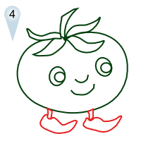

THE TOMATO BOYS
 Home About ContactCHERRY TOMATO
Description
Cherry tomatoes are believed to go as far back as Aztec Mexico in at least the 15th century CE (see Tomato). The first tomatoes cultivated in Europe in the 16th century, were yellow cherry tomatoes.
Cherry tomatoes have been popular in the United States since at least 1919.[6] Recipes using cherry tomatoes can be found in articles dating back to 1967.
Botany
The berry tomato is regarded as a botanical variety of the cultivated berry, Solanum lycopersicum var. cerasiforme.
Cherry tomatoes range in size from a thumbtip up to the size of a golf ball, and can range from being spherical to slightly oblong in shape. Although usually red, other varieties such as yellow, green, and black also exist.
Scientific Classification
Kingdom: Plantae
(unranked): Angiosperms
(unranked): Eudicots
(unranked): Asterids
Order: Solanales
Family: Solanaceae
Genus: Solanum
Species: S. lycopersicum
Variety: cerasiforme